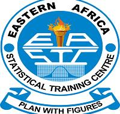
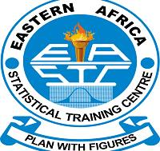
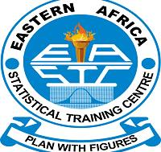
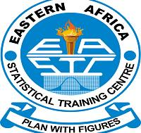

MINISTRY OF FINANCE
EASTERN AFRICA STATISTICAL TRAINING CENTER
CHUO CHA TAKWIMU MASHARIKI MWA AFRIKA
EASTERN AFRICA STATISTICAL TRAINING CENTER
CHUO CHA TAKWIMU MASHARIKI MWA AFRIKA
 




guest of honor

speaker
Welcome to 7th Convocation Ceremony at EASTC hall from 7:00am-12:00pm
"Modernizing data ecosytems to accelerate the implementation of Africa Continental Free Trade Area (AFCFTA):
The role of official statistical and big data in the economic trasformation and sustainable development in Tanzania."